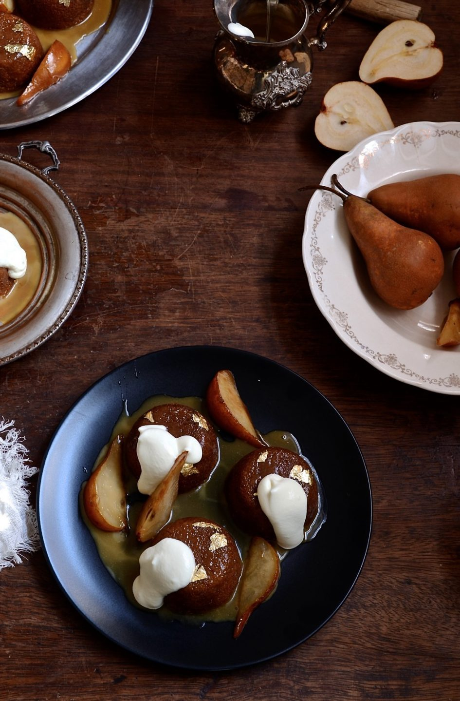

Malva Pudding - Recipe

Image Source
Description
Malva Pudding is a delicious South African dessert that's usually served hot. The pudding is comprised of both cake and syrup; the cake portion is spongey whereas the sweet syrup-like sauce made from Apricot jame seeps through the sponge cake.
is a yummy South African dessert served hot and delicious. Apricot jam is used to make a sweet sauce that's poured over the pudding during baking. Mmmmm!
Ingredients:
For the Sponge Cake
- 6 1⁄2 ounces sugar (3/4 cup, 200 ml, or 180 g)
- 2 large eggs
- 1 tablespoon apricot jam
- 5 ounces all-purpose flour (150 g)
- 1 teaspoon baking soda
- 1⁄2 teaspoon salt
- 1 tablespoon butter (a generous tablespoon)
- 1 teaspoon vinegar
- 1⁄3 cup milk
For The Sauce
- 3⁄4 cup fresh cream (200 ml)
- 3 1⁄2 ounces butter (100 g)
- 3 -5 ounces sugar (90 - 150 g)
- 1⁄3 cup hot water (90 ml)
- 2 teaspoons vanilla essence
Directions:
- Preheat oven to 350 deg F/180 deg Celsius. Adjust accordingly.
- Grease an oven dish.
- Beat or whip the sugar and eggs.
- Beat until thick and lemon coloured, then add the jelly (jam) and mix through.
- Melt the butter (don't boil) and add the butter and vinegar
to the wet mixture.
- Sieve, or simply mix together: the flour, soda and salt.
- Add this mixture with the milk to the egg mixture in the processor or mixing bowl. Beat well.
- Pour into an oven-proof dish and bake until pudding is brown and well-risen -- depending on your oven and oven dish this will be between 30 - 45 minutes. (Mine was done in 30 minutes this time).
- In a pot, melt together the ingredients for the sauce, and stir well.
- Pour it over the pudding as soon as it comes out of the oven.
- Leave to stand awhile before serving. Serve warm. Because it's rich it does not really need enhancement, but if you want, serve with vanilla ice cream.